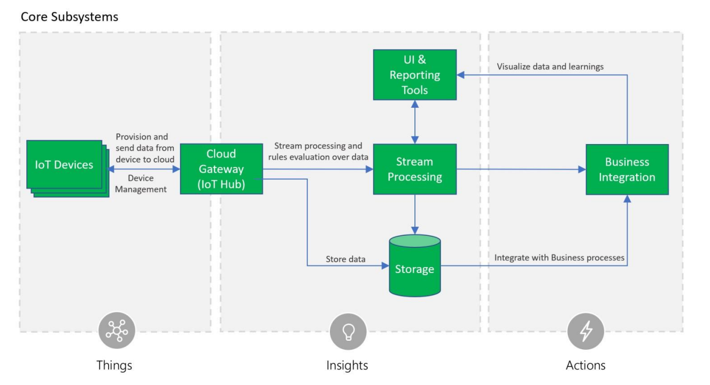

Architecture
The 3M IoT Platform on Azure consists of the following subsystems: 1) devices (and/or on premise edge gateways) that have the ability to securely register with the cloud, and connectivity options for sending and receiving data with the cloud, 2) a cloud gateway service, or hub, to securely accept that data and provide device management capabilities, 3) stream processors that consume that data, integrate with business processes, and place the data into storage, and 4) a user interface to visualize telemetry data and facilitate device management.

Security is a critical consideration in each of the subsystems. The platform protects IoT devices, data, and communication by securely provisioning devices, secure connectivity between devices, edge devices, and the cloud, secure access to the backend solutions, and secure data protection in the cloud during processing and storage (encryption at rest).
The platform's use of Azure IoT Hub offers a fully-managed service that enables reliable and secure bi-directional communication between IoT devices and Azure services such as Azure Machine Learning and Azure Stream Analytics by using per-device security credentials and access control. Both Azure Cosmos DB for warm path storage and Azure Blob Storage for cold storage both are available and support encryption at rest.
All data access and permissions are governed by Azure Active Directory. External access is available via OpenID Connectivity as needed.